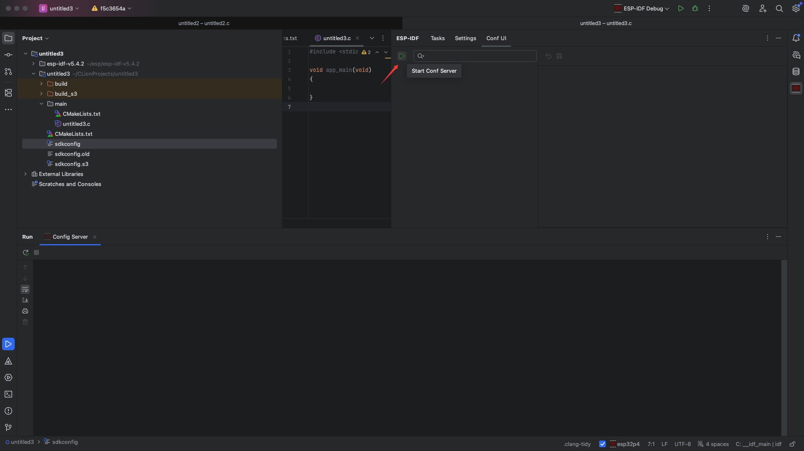
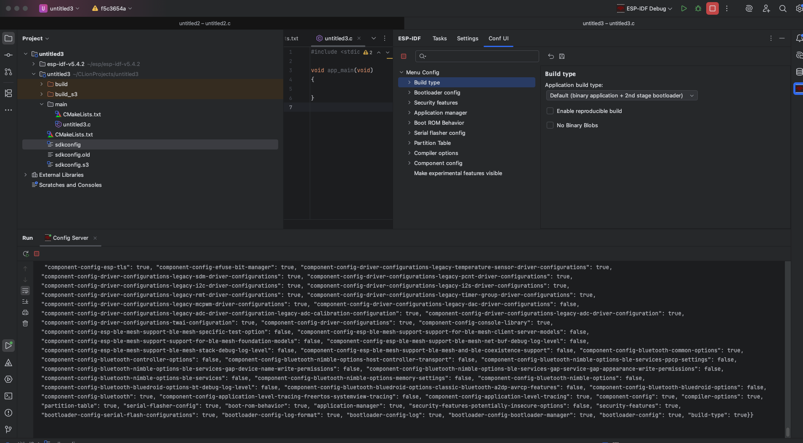
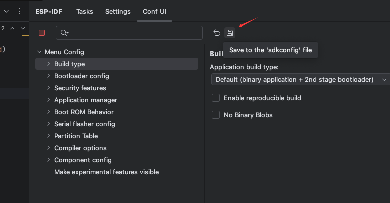
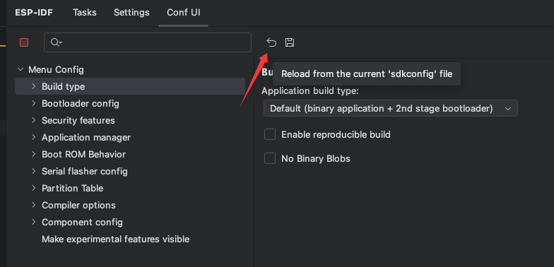
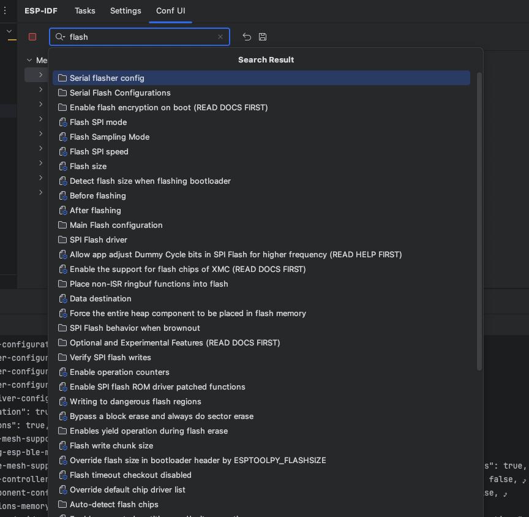
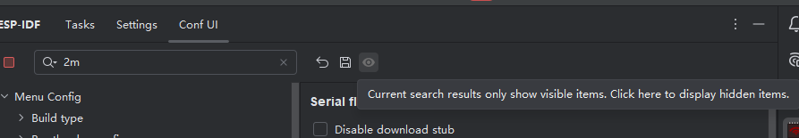
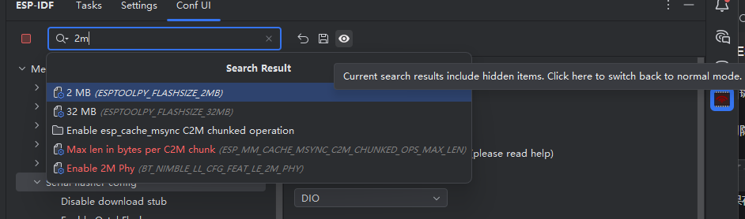
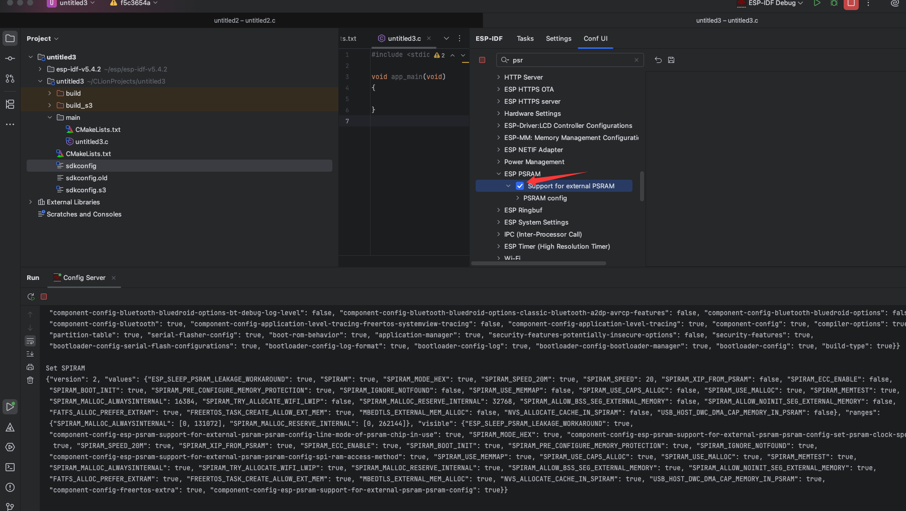
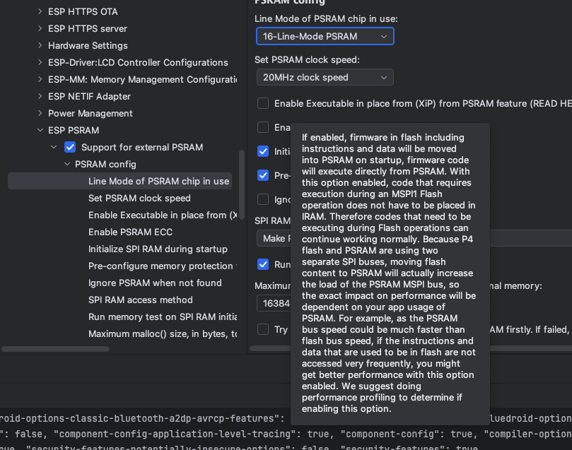
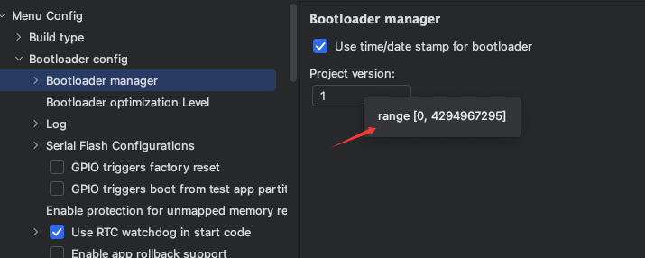

MenuConfig的GUI
启动Conf Server
confserver 启动后才能加载菜单，所有的UI修改或者加载值其实通过stdio与confserver进程通讯。

基本页面
主要由Kconf树, 右侧配置面板 构成。同时confserver的控制台会出现，仅供分析日志，不可输入。

每次点击下拉菜单选中，点击复选框，或者输入文本框之后鼠标离开文本框，都会设置临时值到confserver。
保存到sdkconfig

重新加载(会丢弃之前设置到confserver的临时值)

搜索功能

发起搜索
1.输入文本到搜索框,值变化会自动弹出结果。
2.结果在失去焦点后消失，按enter键也会发起搜索。
3.启用隐藏项结果

点击保存按钮后方的眼睛图标激活在搜索结果展示隐藏项目

搜索结果中会以红色展示被匹配的隐藏项目
搜索结果
1.搜索结果分文件夹和配置项，可以按图标区分。配置项会展示其ID
2.最多50条结果
3.搜索结果展示出来时可以按↑和↓选中，按enter或者左键跳转结果。
4.隐藏项目被匹配后跳转时,会往上返回父节点直到父节点为可见
限制
1.搜索结果弹出时，清除功能不能默认触发，而是触发悬浮窗失去焦点，导致在弹出结果时无法使用，一键清空。
2.搜索结果弹出时,无法使用左右键移动光标
树上的复选框
属于kconf中一种带有子项的bool类型,和具有is_menuconfig属性且值为true的menu类型，选中会影响menuconfig的其他节点隐藏显示。
例如使能psram

这种使能开关只有在复选框区域才能触发选中事件，在复选框之后的文本，被单击双击同于其他节点，可以展开或折叠下方节点。
ToolTip
在树上或者右侧面板，如果当前节点具有帮助，会被设做tooltip。

但有一种例外场景 （int类型文本框）

文本框类型选项如果有帮助会以Tooltip方式附着在其标题上， 而int类型文本框本身可能含有范围限制，在鼠标悬停在有范围限制的int类型文本框会出现其范围的Tooltip